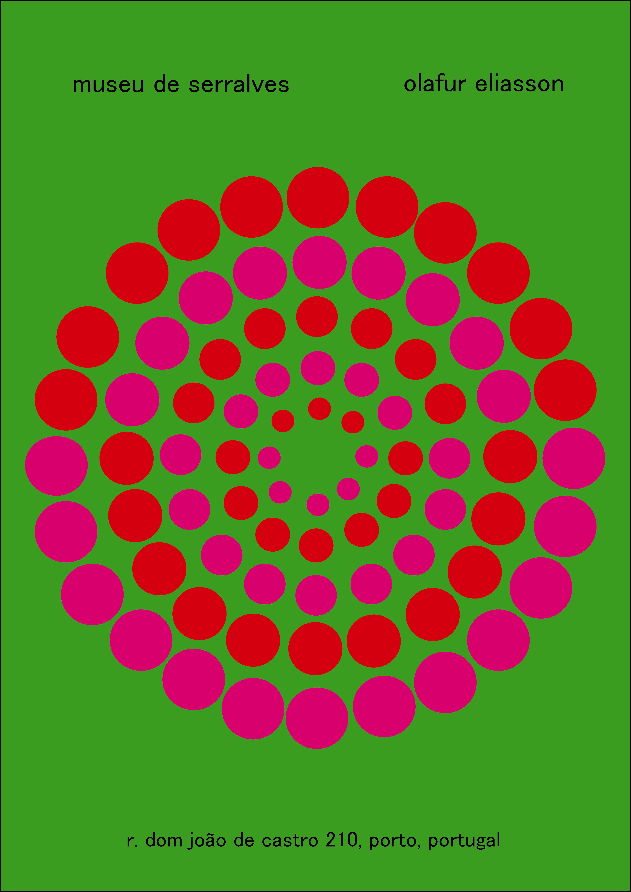

POSTERS INSPIRED BY ARTIST ALMIR MAVIGNIER
This project was made in the curricular unit of Communication Design I of the 1st year of the course. We were asked to choose and study an artist of our taste and then make a poster that had the main characteristics of this artist's work. The artist I chose was Almir Mavignier, this artist used to make several posters for other artists for several exhibitions in museums and art galleries, so I decided that my poster would be just that, an advertising poster for an art exhibition.
At the time I was doing this work, I knew that there was going to be an exhibition at the Serralves Museum in Porto of the artist Olafur Eliasson, and so my poster would be to advertise that.
The central drawing of this poster represents in a discreet way one of Olafur Eliasson's works.